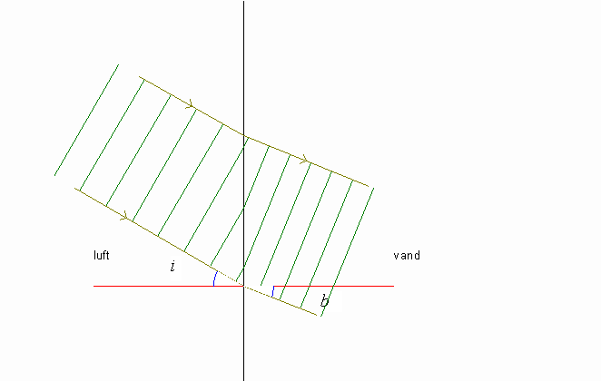

På ovenstående billede skal de grønne liniestykker forestille bølgetoppe.
I Panelet til venstre i Regnbuen kan man skifte stråleretning og man kan ændre indfaldsvinkel i og lysets farve og man kan sætte bølgefronterne i bevægelse ved at klikke på knappen »Kør«.
Desuden kan man klikke på knapperne øverst og fx få vist den spejlede bølge.
Som ved brydning er der også her forklaring og spørgsmål i memoen og der er data i tabellen.
Tabel:
Brydning i vand |
|
| Brydningsindeks, n | 1,334 |
| Bølgelængde/nm, grøn | 546,1 |
| Indfaldsvinkel i/° | 30,0 |
| Brydningsvinkel b/° | 22,0 |
Hvad kan du sige om lysets bølgelængde i vand i forhold til lysets bølgelængde i luft?
Hvad gælder der om lysets udbredelseshastighed i vand i forhold til lysets udbredelseshastighed i luft?
Formuler brydningsloven i ord og opskriv formlen.
Formuler spejlingsloven.
Varier bølgelængden, hvad ser du på skærmen?
Benyt knappen »Frem« til at køre bølgemønstret netop én bølgelængde fremad.
Aktiver knappen spejling og find ud af, hvad der skal gælde om stråleretning og indfaldsvinkel, for at der er totalrefleksion.